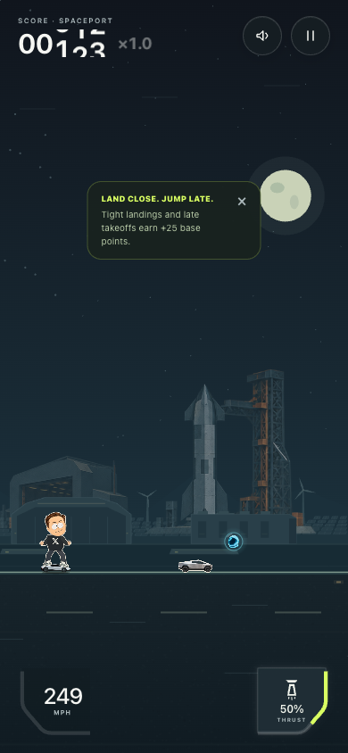
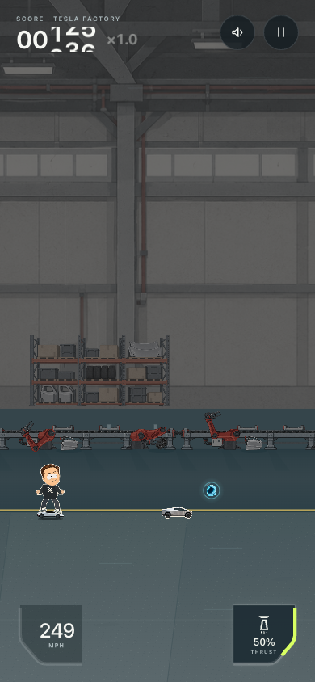

Исследование и настройка камеры для Tesla Jump 4.4.3 · 23 октября 2026
В прежней камере увеличение скорости мира на 83% превращалось только в 15% роста скорости препятствий на экране. Отдаление следовало возрасту попытки, а фон оставался почти в том же масштабе. Это объясняет ощущение «предметы уменьшились», но само по себе не доказывает субъективный эффект новой настройки.
Слева прежняя камера, справа новая. В обеих сценах одинаковый подготовленный профиль: разгон, бонус скорости, потеря темпа. Шкала обычного разгона 150 секунд здесь сжата в 3 секунды для сравнения. Это запись настоящих painter и симуляции с подготовленными состояниями, а не свободное прохождение. Препятствия между отсчётами размещаются наблюдателем; столкновения исключены.
Анимация запускается только по кнопке. Неподвижные кадры приведены ниже.
| Приём | Применение |
|---|---|
| Forward focus | Герой плавно сдвигается с 24% до 16% ширины телефона на обычном разгоне; высота дороги закреплена. Перед героем больше места без дополнительного уменьшения объектов. |
| Действительная скорость | Ракурс зависит от текущей скорости, включая заработанные ускорения, бустер и восстановление. Таймер попытки не управляет камерой. |
| Разные скорости сближения | Раскрытие быстрее возврата: коэффициенты 4/с и 1.25/с. Ограниченная реакция без перелёта и тряски. |
| Глубина и оптическое движение | Фон тоже отдаляется. Ближняя дорога движется согласно настоящей скорости и исходному масштабу; больше не теряет разгон из-за уменьшения игровых объектов. |
| Периферические подсказки | Небольшие линии только у верхнего края и ниже дороги. Центральный коридор препятствий остаётся свободным; reduced motion убирает линии. |
| 390×844, обычный разгон | До | После |
|---|---|---|
| Скорость препятствий: старт → максимум | 178 → 205 px/s | 178 → 227 px/s |
| Движение ближней дороги на максимуме | 205 px/s | 327 px/s |
| Видимый путь с правым запасом 24px | 878 world units | 883 world units |
| Размер объектов на максимуме | 100% | 111% |
Это расчёт проекции и браузерные измерения, не оценка человеческой реакции. Геометрия столкновений, награды и редкость BACKUP 4.4.2 сохранены.


Itay Keren: Scroll Back — источник принципов композиции впереди героя, связи камеры со скоростью и сглаживания. Для линейного раннера разумно отдавать больше кадра направлению движения. Конкретные коэффициенты здесь — наша настройка, а не рецепт автора.
MIT: 3D Motion and Its 2D Projection показывает различие между простым масштабированием и движением с параллаксом. Здесь применена стилизованная 2D имитация глубины, без перспективного искажения игровых объектов.
Проверены размеры 320×568, 390×844, 844×390 и 1440×900, два биома и reduced motion. Физический iPhone/Safari и субъективная оценка ощущения скорости остаются для теста пользователя. Материалы и реальные границы проверки: README.